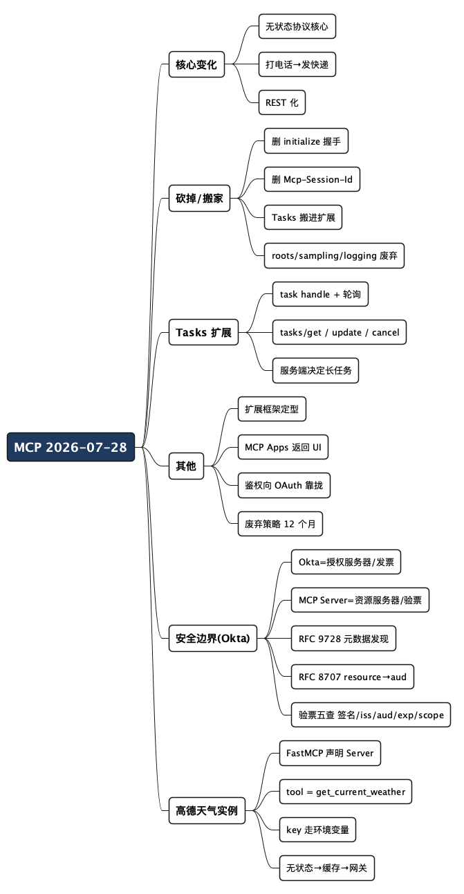

MCP 大改版：从"打电话"变成"发快递"，附一个高德天气 MCP Server
Posted on 日 02 8月 2026 in AI
| Abstract | MCP 大改版：从"打电话"变成"发快递"，附一个高德天气 MCP Server |
|---|---|
| Authors | Walter Fan |
| Category | learning note |
| Version | v1.0 |
| Updated | 2026-08-02 |
| License | CC-BY-NC-ND 4.0 |
MCP 大改版：从"打电话"变成"发快递"，附一个高德天气 MCP Server
如果你最近半年没盯着 MCP（Model Context Protocol，一套让 AI 应用去调用外部工具和数据的开放协议），那我先给你提个醒：2026 年年中出来的这版规范，官方自己说是"发布以来最大的一次改动"（the largest revision since launch）。
我第一次翻这份 release candidate 的时候，感觉不太像"版本升级"，更像是"推倒重来"。以前那套 initialize 握手没了，Mcp-Session-Id 这个 Session 头也没了，连一次工具调用长什么样都变了。对天天写后端、被有状态服务的水平扩展折磨过的人来说，这次改动方向我是举双手赞成的。
这篇文章我想干两件事：先用大白话把这次到底改了什么、为什么这么改讲清楚；再带你写一个能跑的 Python 实例——把高德天气 API 包成一个 MCP Server，代码你可以直接抄。
先把一句话结论撂这儿：
这次 MCP 从"打一通电话"（有状态、要先建立连接、全程占线）变成了"发一个快递"（无状态、每个请求自带地址、谁都能签收）。 对做云原生、做网关、做 Serverless 的人来说，这是好事。
一个小提醒（也是我踩过的坑）：写这篇的时候，
2026-07-28还是 release candidate（候选发布版），正式生效前，线上真正在用的仍是上一版2025-11-25。所以下面讲的是"方向"和"即将落地的规范"，别拿去当"今天就必须改完"的 deadline。四个 Tier 1 SDK（TypeScript、Python、Go、C#）都已经能说这版协议了。
一、最大的变化：从有状态变成无状态
这是这次改动里最核心的一件事，其他所有变化几乎都是围着它转的。先说人话，再说协议。
打个比方：打电话 vs 发快递
旧版（2025 那套）像打电话。 客户端要先拨号（initialize），服务端接起来、分配一个 session-id，然后你俩就"占着这条线"，后面所有工具调用都得走这条线：
- 服务端得记着这通电话的上下文（session、会话状态、能力协商结果）；
- 负载均衡得做 Sticky Session（同一个客户端的请求必须回到同一台机器），不然"电话就断了"；
- 想水平扩容？难。想在前面加个网关或者 CDN？也难。
新版像发快递。 每个请求都是一个自带完整收件地址的包裹，扔给任意一台服务器都能签收、处理、回寄：
flowchart TB
subgraph OLD["旧版（有状态 / 打电话）"]
C1["Client"]
C1 -->|"initialize"| S1["Server"]
S1 -.->|"session-id = abc123"| C1
C1 -->|"tool call"| S1
C1 -->|"tool call（必须回到同一台机器）"| S1
S1["Server（必须记住 abc123）"]
end
subgraph NEW["新版（无状态 / 发快递）"]
C2["Client"]
C2 -->|"POST /mcp（每个请求自带全部信息）"| S2A["任意一台 Server"]
C2 -->|"POST /mcp（换一台也行）"| S2B["另一台 Server"]
S2A["Server（什么都不用记）"]
S2B["Server（什么都不用记）"]
end
OLD --- NEW
具体到协议长什么样
新版一次工具调用，就是一个自包含的 HTTP 请求，任何一个服务实例都能处理：
POST /mcp HTTP/1.1
MCP-Protocol-Version: 2026-07-28
Mcp-Method: tools/call
Mcp-Name: search
Content-Type: application/json
{"jsonrpc":"2.0","id":1,"method":"tools/call",
"params":{"name":"search","arguments":{"q":"otters"}}}
注意几个细节：协议版本 MCP-Protocol-Version 直接放在请求头里（每个请求都带，不再靠一次性握手协商）；没有 session-id；没有"先连接再干活"的前置步骤。整体感觉，从"像 Language Server Protocol"变成了"像一个普通的 REST API"。
这个转变的好处，做过运维的人一看就懂：
- Kubernetes 部署更省心，Pod 可以随便扩缩容，不用担心把请求打到"另一台不认识你的机器"上；
- 前面加网关、加反向代理、加 CDN 都变简单了；
- Serverless（函数计算那种一次一实例的形态）终于能好好承载 MCP Server 了。
二、被砍掉和被搬家的东西
无状态这一刀下去，连带着改了一串东西。我整理成一张表，方便你对着旧版做迁移体检：
| 能力 | 旧版（2025-11-25） | 新版（2026-07-28 RC） | 你要做的 |
|---|---|---|---|
| 握手 | initialize / initialized 两步握手 |
删除，改用按需的 server/discover 发现能力 |
去掉握手逻辑 |
| 会话 | Mcp-Session-Id 请求头 |
删除，协议层不再有 session | 状态自己用 handle/存储管 |
| 长任务 | 实验性的 core 能力 | 搬进官方扩展 io.modelcontextprotocol/tasks |
用轮询而非阻塞等待 |
| 服务端反向请求 | roots / sampling / elicitation | 统一成 InputRequiredResult（多轮请求） |
改造需要用户补充输入的流程 |
| roots / sampling / logging | 正常能力 | 标记为废弃，至少还能用 12 个月 | 新项目别再用 |
| 老的 HTTP+SSE 传输 | 已在更早版本废弃 | 正式进入废弃生命周期，一年缓冲期 | 迁到新的无状态传输 |
这里有两个点我想多啰嗦几句，因为最容易理解错。
一是 initialize 不是"简单删掉就完事"。 用户群里常见的误解是"以后第一个请求直接调工具就行"。更准确的说法是：握手换成了一个按需的 server/discover RPC——你想知道这个 Server 有哪些工具、什么 schema，就主动去 discover 一下；但这不再是"必须先做、做完才能干活"的强制前置步骤。这是无状态化很自然的一步。
二是 Tasks（长任务）不是新东西，是"重造"。 它在 2025-11-25 就以实验能力的身份进过 core，结果生产环境一用，大家发现它跟有状态强绑定，于是这次干脆把它拆出来做成官方扩展，并且围着无状态重新设计。
三、Tasks 扩展：Agent 终于能"边聊边干活"
这是我个人最喜欢的一块，因为它直接解决了 Agent 做长活儿的老大难。
旧版的工具调用是阻塞式的：你调一个"跑一段 SQL"或者"构建一个 Docker 镜像"，就得干等它跑完，这期间对话是卡住的。
新版的 Tasks 扩展改成了任务句柄 + 轮询的模式：
sequenceDiagram
participant C as Client
participant S as Server
C->>S: tools/call
Note over S: 接活，返回一个 task handle（任务凭证）
S-->>C: task handle
Note over C: （继续和用户聊别的）
C->>S: tasks/get(handle)
S-->>C: running
C->>S: tasks/update（中途补个输入，需要的话）
C->>S: tasks/get(handle)
S-->>C: done + 结果
C->>S: tasks/cancel(handle)（不想等了，取消）
几个关键设计（这些都是这次 RC 明确写进去的）：
- 用轮询的
tasks/get取代了旧版那个阻塞式的tasks/result； - 新增
tasks/update，让客户端在任务执行途中把输入补进去； - 去掉了
tasks/list； - 任务由服务端决定：客户端只是声明"我支持 Tasks 这个扩展"，具体某次调用要不要当成长任务来跑，是服务端说了算，服务端可以主动返回一个 task handle。
因为 handle 是自包含的、能持久化、不依赖 session，它天生适合跨机器、跨时间的长活儿：代码构建、Docker/K8s Job、深度检索、Deep Research、ETL……这些以前塞进一次同步调用里很别扭的场景，现在有了正经的表达方式。
四、其他值得一提的变化
无状态和 Tasks 是重头戏，剩下几个我快速过一遍，够你建立全景就行。
-
扩展框架（Extensions Framework）正式定型。 以后新增能力（UI、长任务、鉴权……）不用再动整个协议，而是挂成一个带反向域名标识（比如
io.modelcontextprotocol/tasks）、能独立版本演进的扩展。这个思路和 HTTP Header、Kubernetes CRD 一脉相承——协议留个稳定内核，能力靠扩展生长。 -
MCP Apps：Server 能返回 UI 了。 以前 Server 只能吐 JSON，现在可以返回沙箱 iframe 里渲染的 HTML 界面（表单、图表、审批按钮）。社区里那个
mcp-ui项目，如今被扶正成了官方扩展。对做企业内部工具的人，这意味着"一个 GitHub MCP 直接返回一个 Issue 看板 + 审批按钮"成为可能。 -
鉴权向 OAuth 2.0 / OpenID Connect 靠拢。 越来越多企业拿 MCP 连内部系统，安全就绕不过去。新版明确往标准鉴权收敛，理想形态是：Okta / Azure AD / Google Workspace 这类身份源，统一走一个 MCP Gateway，而不是每个 Server 各自管一套 Token。
-
正式有了废弃策略（Deprecation Policy）。 每个能力有明确的生命周期（实验 / 稳定 / 废弃），废弃至少给 12 个月缓冲。这对 SDK 和上下游做兼容是实打实的好事——终于不用猜"这个能力哪天说没就没了"。
-
安全被摆到更重要的位置。 能力越强，攻击面越大。MCP Apps 能渲染 HTML，就得防 UI 注入；Server 能返回 handle、能跑长任务，就得防恶意 Server 和权限越界。已经有研究专门讨论新功能带来的运行时风险。所以企业落地时，普遍会在 Server 前面加一层网关做审批、审计、沙箱。
五、MCP Server 的认证与授权：先分清两个问题
个人开发者的 MCP Server 大多跑在 localhost 上，不做认证也无所谓。但企业级 MCP Server 的核心难点从来不是 Tool，而是认证（AuthN）和授权（AuthZ）。如果你熟悉 Kubernetes ServiceAccount、SPIFFE、JWT、微服务授权中心，会发现 MCP 的安全模型跟现代微服务几乎一模一样。
先把两个问题分清楚，别串了：
- 认证（Authentication）回答"你是谁"——是 Walter，还是 Claude Desktop、某个 Internal Agent。常用手段：OAuth2 / OIDC / JWT / mTLS / SPIFFE。
- 授权（Authorization）回答"你能干什么"——能调
github.read、jira.search，但不能碰mysql.drop_database、aws.admin。
顺序永远是：先认证识别身份（Principal），再授权检查权限（Permission）。
5.1 别让每个 Server 自己管用户
最推荐的落地方式，是不要让每个 MCP Server 各自造一套登录/Token/用户库，而是把这些收口到一层 MCP Gateway：
flowchart LR
A["AI Agent"]
G["MCP Gateway<br/>（认证 / 授权 / 审计）"]
M1["GitHub MCP Server"]
M2["Jira MCP Server"]
M3["MySQL MCP Server"]
A -->|"Bearer Token"| G
G --> M1
G --> M2
G --> M3
分工很清晰：MCP Server 专心提供 Tool，登录、Token 管理、MFA、SSO 这些统统交给 Gateway。
5.2 认证怎么做
由简到繁，够用就好：
- Bearer Token（最简单）：请求头带
Authorization: Bearer <JWT>，Server 验签、取出sub/aud/scope即可，JWT 来自 OAuth / OIDC / 企业 IdP。 - OAuth2 / OIDC（企业首选）：走 Okta / Microsoft Entra ID / Google Workspace / Keycloak 统一登录，Server 只验票、根本不碰密码。下一节用 Okta 完整走一遍。
- mTLS / SPIFFE（适合 Agent 集群）：用客户端证书或 SPIFFE ID（如
spiffe://company/agent/code-review）表达工作负载身份，没有 Bearer Token 被窃取的问题，Agent 也不用各自保存 API Key。
5.3 授权分几层
从粗到细，按需叠加：
- Scope：JWT 里写明
repo.read/jira.read，Tool 声明自己需要哪个 scope。 - RBAC：按角色发权限（Admin / Developer / Guest），类似 Kubernetes RBAC。
- ABAC：结合部门、团队、位置、设备、风险等属性动态判定。
- OPA（推荐）：把策略交给 Open Policy Agent 等策略引擎，Server 完全不用写权限逻辑。
再往细里做，还有两条容易被忽略：Tool 级授权（read_issue 要 jira.read，delete_issue 要 jira.admin，别一股脑放行）和Resource 级授权（不光看能不能调 search_repo，还要看这个用户对 myrepo 这个具体资源有没有权限）。最后别忘了审计——谁、何时、调了哪个 Tool、参数是什么、结果如何，统一记下来，SOC、合规、事后取证都靠它。
一句话收口：认证交给 IdP，授权集中到 Gateway/策略引擎，MCP Server 保持无状态、只管执行 Tool。 这也正好和新版 MCP 向无状态、企业集成、统一身份治理演进的方向一致。
六、安全边界怎么落地：以 Okta 为例
上一节讲了认证/授权的大框架，还是有点抽象。这一节我用 Okta（一个企业常用的身份提供商，IdP）走一遍完整流程，把"你是谁"和"你能干什么"落到具体的票和验票逻辑上。
先记住一句话，它能帮你摆正所有角色的位置：
MCP Server 是 OAuth 里的"资源服务器"（Resource Server），Okta 是"授权服务器"（Authorization Server）。MCP Server 只负责验票、不负责发票。
打个生活比方：Okta 是电影院售票处，MCP Server 是检票口。检票口不管你怎么买的票、也不认识你本人，它只干一件事——验证你手里这张票是不是售票处开的、是不是这个场次的、有没有过期。谁是谁的活儿，别串了。
6.1 三个角色和一张票
| 角色 | 谁来当 | 干什么 |
|---|---|---|
| Authorization Server（授权服务器） | Okta | 认证用户、签发 access token（票） |
| Client（客户端） | AI Agent / Claude Desktop 等 MCP Client | 拿着用户去 Okta 换票，带着票来调 Server |
| Resource Server（资源服务器） | 你的 MCP Server | 验票，票对了才干活 |
这里的"票"就是一个 JWT access token：一段签了名、带过期时间、写明"发票方是谁、这张票给谁用（audience）、能干哪些事（scope）"的字符串。
6.2 认证 + 授权的完整流程
新版 MCP 的鉴权基线（2025-11-25 敲定、2026-07-28 继续沿用并加固）是 OAuth 2.1 + PKCE，配套两个发现机制。别被术语吓到，我拆成六步：
sequenceDiagram
participant C as Client(Agent)
participant S as Your MCP Server
participant O as Okta (Auth Server)
C->>S: 1. tools/call（没带票）
S-->>C: 401 + 一个指路牌（RFC 9728）<br/>指向 /.well-known/oauth-protected-resource
Note over C,S: 2. 读指路牌：谁保护我(authorization_servers = Okta)、<br/>我的身份标识(resource)、我要哪些 scope
C->>O: 3. 带用户去 Okta 换票
Note over O: 用户在 Okta 登录(认证)<br/>OAuth 2.1 授权码 + PKCE
O-->>C: 发一张 JWT(access token)<br/>aud = 你的 MCP Server<br/>scope = weather.read
C->>S: 4. tools/call + Bearer 票
Note over S: 验票（见 6.3）
S-->>C: 结果（票 OK 且 scope 够 → 干活，返回天气）
其中两个"指路牌"是关键，也是最容易漏的：
- 第 1、2 步（RFC 9728，Protected Resource Metadata）：Server 被无票访问时，回
401并在WWW-Authenticate头里指向自己的元数据端点/.well-known/oauth-protected-resource。这个文档机器可读地告诉客户端："保护我的是 Okta，去那儿换票，记得带上我的 resource 标识和这些 scope。" 客户端不用把 Okta 地址写死，自动发现。 - 第 3 步里的
resource参数（RFC 8707，Resource Indicators）：客户端向 Okta 换票时必须带上"我要给哪个 Server 用"，Okta 才会把 JWT 的aud（audience，受众）字段设成你的 MCP Server。漏了这步，签出来的票aud不对，Server 验票时就会拒绝——这是实践中最常见的坑，我特意标出来。
6.3 MCP Server 端到底要验什么
回到那个"检票口"的活儿。你的高德天气 MCP Server 收到带 Authorization: Bearer <jwt> 的请求后，验票要卡这几条，缺一不可：
- 签名对不对：用 Okta 公开的 JWKS（公钥集）验 JWT 签名，确认票确实是 Okta 签的，不是伪造的。
iss（发票方）对不对：必须是你信任的那个 Okta 授权服务器地址。aud（受众）是不是我：必须等于你这个 MCP Server 的 resource 标识。这一条防的是"把发给别的 Server 的票拿来这儿用"——token 转发攻击的关键防线。exp（过期时间）过没过：过期的票一律拒。scope够不够：调get_current_weather至少得有weather.read。没有就返回403，而不是默默放行。
用伪代码表达就是（真实项目里用 PyJWT + 从 Okta 拉 JWKS 即可）：
# 概念示意：MCP Server 侧的验票中间件（伪代码）
def verify_token(bearer_token: str) -> dict:
claims = jwt.decode(
bearer_token,
key=okta_jwks, # 1. 用 Okta 公钥验签名
algorithms=["RS256"],
issuer="https://your-org.okta.com", # 2. iss 必须是我信任的 Okta
audience="https://mcp.your-org.com/weather", # 3. aud 必须是我
options={"require": ["exp", "aud", "iss"]}, # 4. exp 由库校验过期
)
if "weather.read" not in claims.get("scope", "").split():
raise PermissionError("scope 不足") # 5. 授权检查，不够就 403
return claims
6.4 无状态 + 网关：为什么这套组合特别搭
这里正好呼应第一节的"无状态"。JWT 验票本身就是无状态的——每张票自带过期时间、aud、scope，Server 不用记"这个用户上次登录过"，任意一台实例拿到票都能独立验完。这跟新版 MCP"每个请求自包含"的气质天然合拍，也是它能塞进 Kubernetes、随便扩容的前提。
不过我不建议让每个业务 Server 各自实现上面那套验票逻辑——重复、易错、难审计。更好的落地是把鉴权收口到 MCP Gateway：
flowchart LR
O["Okta（认证 + 发票）"]
A["Agent"]
G["MCP Gateway<br/>（统一验票 / 限流 / 审计 / ACL）"]
W1["天气 MCP Server（只管天气）"]
W2["GitHub MCP Server"]
W3["MySQL MCP Server"]
A -->|"票"| G
O -->|"换票"| A
G --> W1
G --> W2
G --> W3
网关统一验签名、查 aud/scope、记审计日志、做限流和 ACL；后面的天气 Server 只在内网、只管查天气，甚至可以信任网关已经验过票。这样每加一个新 Server，都不用再抄一遍鉴权代码——认证授权只做一次，业务逻辑保持干净。
一句话收口：认证交给 Okta，验票交给网关，业务 Server 只管业务。 三层分工不串，安全和扩展性才都能要。
七、动手：把高德天气包成一个 MCP Server
讲了这么多，不写代码等于纸上谈兵。下面用一个具体例子把它落地：给 Agent 一个"查某个城市天气"的能力，数据源用高德天气 API。
我参考了自己另一个项目 lazy-rabbit-agent 里已经在用的高德天气封装，写了两个只差一行的对照示例：一个走旧版有状态、一个走新版无状态。两份完整代码都在这个仓库里，可以直接 clone 下来跑：
- 旧版（有状态 / 打电话）：
example/weather_mcp_2025.py - 新版（无状态 / 发快递）：
example/weather_mcp_2026.py
高德这个接口很适合当例子：一个 GET 请求，传城市 adcode 和 extensions 参数，就能拿实时天气或者未来几天预报——本身就是无状态的，正好贴合新版 MCP 的气质。
7.1 准备工作
先去高德开放平台申请一个 Web 服务的 key（免费额度足够练手）。然后装依赖：
pip install "mcp[cli]" httpx
mcp 是官方 Python SDK，已经支持 2026-07-28；httpx 用来发异步 HTTP 请求。key 别写死在代码里，走环境变量：
export AMAP_API_KEY="你的高德key"
7.2 一个能跑的天气 MCP Server
先看新版这份 weather_mcp_2026.py（有删节，完整版看仓库）。核心就是：用 FastMCP 声明一个 Server，把"查天气"注册成工具（tool），工具内部去调高德接口。注意整个 Server 不存任何会话状态——每次调用自带城市参数，符合新版无状态的理念。
# example/weather_mcp_2026.py（新版：无状态 / 发快递）
import os
import sys
import httpx
from mcp.server.fastmcp import FastMCP
# 高德 Web 服务地址（不硬编码 key，从环境变量读）
AMAP_BASE_URL = "https://restapi.amap.com"
AMAP_API_KEY = os.environ.get("AMAP_API_KEY", "")
# 关键就这一行：stateless_http=True —— 走 HTTP 时不维护会话，
# 不需要 initialize 握手、不下发 session-id，每个请求自包含。
mcp = FastMCP("amap-weather-2026", stateless_http=True)
async def _fetch_weather(city: str, extensions: str) -> dict:
"""调用高德 weatherInfo 接口，返回原始 JSON。"""
if not AMAP_API_KEY:
raise RuntimeError("环境变量 AMAP_API_KEY 未设置")
url = f"{AMAP_BASE_URL}/v3/weather/weatherInfo"
params = {
"key": AMAP_API_KEY,
"city": city, # 6 位 adcode，如 "110000" 是北京
"extensions": extensions, # base=实时, all=预报
"output": "json",
}
async with httpx.AsyncClient(timeout=10) as client:
resp = await client.get(url, params=params)
resp.raise_for_status()
data = resp.json()
# 高德用字符串 "1"/"0" 表示成功/失败，这里做个显式检查
if data.get("status") != "1":
raise RuntimeError(f"高德接口返回错误: {data.get('info')}")
return data
@mcp.tool()
async def get_current_weather(city: str) -> str:
"""查询某个城市的实时天气。
参数:
city: 6 位城市编码 adcode，例如北京 "110000"、合肥 "340100"。
"""
data = await _fetch_weather(city, extensions="base")
live = data["lives"][0]
return (
f"{live['province']}{live['city']}当前天气：{live['weather']}，"
f"气温 {live['temperature']}℃，"
f"{live['winddirection']}风 {live['windpower']} 级，"
f"湿度 {live['humidity']}%。"
f"（数据时间 {live['reporttime']}）"
)
@mcp.tool()
async def get_weather_forecast(city: str, days: int = 3) -> str:
"""查询某个城市未来几天的天气预报（最多 4 天）。
参数:
city: 6 位城市编码 adcode。
days: 预报天数，1-4，默认 3。
"""
days = max(1, min(days, 4))
data = await _fetch_weather(city, extensions="all")
forecast = data["forecasts"][0]
labels = {0: "今天", 1: "明天", 2: "后天"}
lines = [f"{forecast['province']}{forecast['city']}未来 {days} 天预报："]
for i, cast in enumerate(forecast["casts"][:days]):
label = labels.get(i, f"+{i}天")
lines.append(
f"- {label}({cast['date']}) 白天 {cast['dayweather']} "
f"{cast['daytemp']}℃ / 夜间 {cast['nightweather']} {cast['nighttemp']}℃，"
f"{cast['daywind']}风 {cast['daypower']} 级"
)
return "\n".join(lines)
def main() -> None:
"""入口：默认 stdio，带 --http 时以无状态 HTTP 传输对外。"""
if "--http" in sys.argv:
# 新版"发快递"形态：无状态 HTTP，可直接塞进 K8s / 函数计算。
mcp.settings.host = "127.0.0.1"
mcp.settings.port = 8026
mcp.run(transport="streamable-http")
else:
# 本地开发用 stdio，客户端（如 Claude Desktop）直接拉起这个进程。
mcp.run()
if __name__ == "__main__":
main()
旧版那份 weather_mcp_2025.py 工具逻辑一模一样，差别几乎只有一行：
# 旧版（有状态 / 打电话）：走 HTTP 时维护会话，
# 隐含 initialize 握手 + Mcp-Session-Id，部署要考虑 Sticky Session。
mcp = FastMCP("amap-weather-2025", stateless_http=False)
把两份放一起看，就能直观感受到这次"从打电话变成发快递"到底改了什么——业务代码没变，变的是协议怎么送请求。
几个我特意保留的工程习惯，值得你抄走：
- key 从环境变量读，不写死、不进日志。 真调用时要 mask（比如只打印前 8 位），这是安全底线。
- 对高德的
status字段做显式检查。 它成功返回"1"、失败返回"0"，不看这个字段直接取lives[0]迟早翻车。 - 工具的 docstring 就是给模型看的说明书。 参数含义、格式、边界（比如"adcode 是 6 位""days 最多 4 天"）都写清楚，模型才知道怎么正确调用。这是写 MCP 工具最容易被忽略、又最影响效果的地方。
7.3 跑起来 & 接到客户端
先把仓库拉下来、装依赖：
git clone https://github.com/walterfan/lazy-rabbit-agent.git
cd lazy-rabbit-agent/example
pip install "mcp[cli]" httpx
export AMAP_API_KEY="你的高德key"
本地自测一下 Server 在不在（两份都能这么跑）：
# 用官方 CLI 直接调试，会弹一个交互界面列出工具
mcp dev weather_mcp_2026.py
# 或者直接以无状态 HTTP 起服务（监听 127.0.0.1:8026/mcp）
python weather_mcp_2026.py --http
然后接到支持 MCP 的客户端。以 Claude Desktop 为例，在它的配置文件里加一段（用 stdio 拉起进程）：
{
"mcpServers": {
"amap-weather": {
"command": "python",
"args": ["/绝对路径/lazy-rabbit-agent/example/weather_mcp_2026.py"],
"env": { "AMAP_API_KEY": "你的高德key" }
}
}
}
重启客户端，就能直接问它"合肥今天天气怎么样"，它会自己决定调 get_current_weather("340100") 并把结果讲给你听。想体验旧版有状态那套，把文件名换成 weather_mcp_2025.py 即可。
7.4 想上生产？往无状态和网关方向走
上面这个用 stdio 传输、本地进程的形态，适合自己单机玩。如果要按新版 MCP 的方向做到"对外、可复用、能扩容"，我建议这么演进：
- 换成 HTTP 传输、无状态部署。 因为 Server 本身不存会话状态，你可以直接塞进 Kubernetes 或函数计算，前面挂负载均衡随便扩。
- 给高德结果加缓存。 天气一小时内变化不大，
lazy-rabbit-agent里就对 adcode + extensions 做了一小时缓存来省调用额度——但缓存放 Redis 这类外部存储，别放进程内存，否则又变回"有状态"了。 - 前面加一层 MCP Gateway。 由网关统一管 OAuth 鉴权、限流、审计、ACL，而不是让这个天气 Server 自己扛。这也正是新版鉴权改造想推动的企业最佳实践。
八、这次改动，对做 Agent 的人意味着什么
把上面串起来，我认为未来做企业级 Agent，架构会越来越长成下面这样：
flowchart TB
A["AI Agent"]
G["MCP Gateway<br/>Auth / Audit / ACL"]
A -->|"MCP Client"| G
G --> W1["天气 MCP（无状态）"]
G --> W2["GitHub MCP"]
G --> W3["MySQL MCP"]
W1 --- T["Task / Handle / Apps"]
W2 --- T
W3 --- T
三个我认为最值得深挖的方向，也留给你：
- 无状态 MCP Server：怎么设计一个真正无状态、能水平扩容、适合云原生和 Serverless 的 Server。上面那个天气例子就是最小起点。
- MCP Gateway：在所有 Server 前加一层统一网关，收口鉴权、限流、审计、策略。这大概率会成为企业标配。
- Task + Handle 模型：让 Agent 从"只会同步调工具"进化到"能编排长任务、异步执行工作流"，去啃那些以前塞不进一次调用的复杂活儿。
给快速变化的规范加一层“保鲜膜”
阅读或实现新规范时，最好在文章和代码旁边同时记录四项：规范发布日期或 draft 版本、使用的 SDK 版本、实际跑过的客户端、仍未验证的扩展。这样读者能分辨哪些是协议核心，哪些只是某个 SDK 当前的实现方式。
最小兼容性测试可以包括：首次请求、重复请求、长任务轮询、鉴权失败、客户端断线后重试，以及旧客户端访问新服务。每个测试都保留一份原始请求和响应，尤其不要只展示封装库返回的成功结果。协议文章最怕“看起来已经能跑”，却没有告诉读者它在哪个版本、哪些边界还没跑过。
写在最后
MCP 这次从"打电话"改成"发快递"，本质上是把状态从协议层踢回到了应用层——协议只管把每个请求送到，状态谁需要谁自己管。这个取舍，做过分布式系统的人都熟悉：无状态的东西，才好扩、好换、好治理。
如果你手上正好有个现成的 REST 服务想接给 Agent 用，别急着上一整套复杂架构。照着上面那个几十行的天气 Server 抄一个最小版本跑通，再按"无状态 → 加缓存 → 加网关"三步慢慢往生产演进。先能跑，再谈优雅。
行动清单
- [ ] 分清你面对的是 RC（
2026-07-28）还是当前生效版（2025-11-25），别把方向当 deadline - [ ] 老代码体检：还在用
initialize握手、Mcp-Session-Id、阻塞式tasks/result的，列进迁移清单 - [ ] 新项目别再碰已废弃的 roots / sampling / logging
- [ ] 写工具时，把 docstring 当"给模型看的说明书"认真写：参数、格式、边界都交代清楚
- [ ] key 走环境变量，日志里 mask，别硬编码
- [ ] 鉴权分清角色：Okta 发票（认证），MCP Server/网关验票（授权）
- [ ] 验票五查：签名、
iss、aud、exp、scope，一条都不能少 - [ ] 换票时记得带
resource参数（RFC 8707），否则aud会对不上 - [ ] 上生产前想清楚：无状态传输 + 外部缓存 + 网关鉴权
全文思维导图
@startmindmap
<style>
mindmapDiagram {
node {
BackgroundColor #F8F9FA
RoundCorner 10
Padding 10
FontSize 13
}
:depth(0) {
BackgroundColor #1E3A5F
FontColor white
FontSize 18
FontStyle bold
}
:depth(1) {
FontSize 15
FontStyle bold
}
:depth(2) {
FontSize 13
}
}
</style>
* MCP 2026-07-28
** 核心变化
*** 无状态协议核心
*** 打电话→发快递
*** REST 化
** 砍掉/搬家
*** 删 initialize 握手
*** 删 Mcp-Session-Id
*** Tasks 搬进扩展
*** roots/sampling/logging 废弃
** Tasks 扩展
*** task handle + 轮询
*** tasks/get / update / cancel
*** 服务端决定长任务
** 其他
*** 扩展框架定型
*** MCP Apps 返回 UI
*** 鉴权向 OAuth 靠拢
*** 废弃策略 12 个月
** 认证与授权
*** AuthN=你是谁
*** AuthZ=你能干什么
*** Gateway 收口/Server 只管 Tool
*** 认证 Bearer/OAuth/mTLS/SPIFFE
*** 授权 Scope/RBAC/ABAC/OPA
** 安全边界(Okta)
*** Okta=授权服务器/发票
*** MCP Server=资源服务器/验票
*** RFC 9728 元数据发现
*** RFC 8707 resource→aud
*** 验票五查 签名/iss/aud/exp/scope
** 高德天气实例
*** FastMCP 声明 Server
*** tool = get_current_weather
*** key 走环境变量
*** 无状态→缓存→网关
@endmindmap

本作品采用知识共享署名-非商业性使用-禁止演绎 4.0 国际许可协议进行许可。 欢迎在我的个人网站 https://www.fanyamin.com 访问原文并评论。